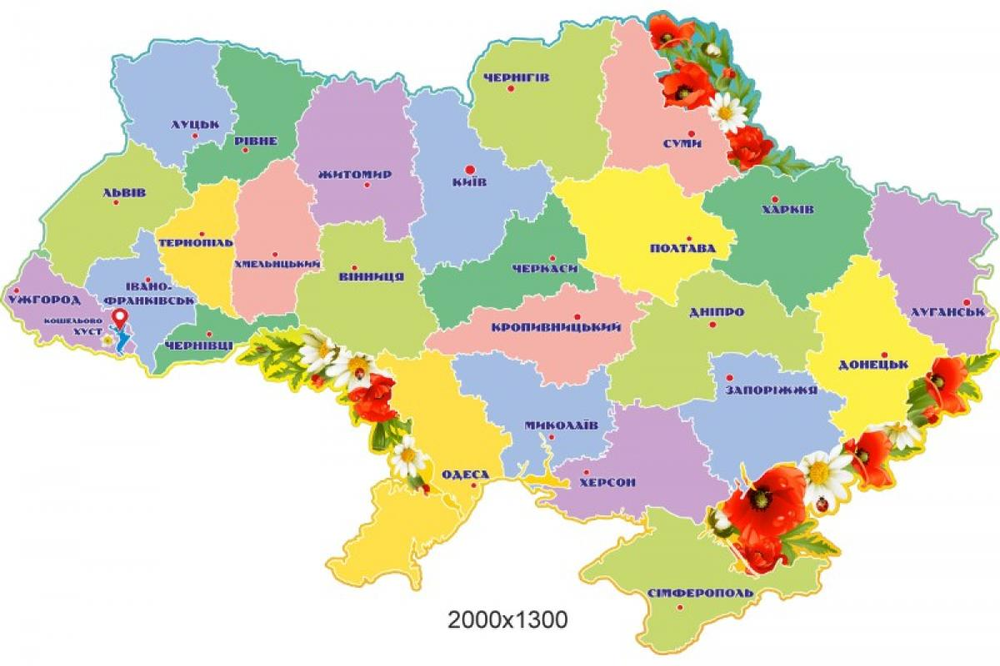

Області України
- АР Крим
- Райони
- Бахчисарайський район
- Білогірський район
- Джанкойський район
- Кіровський район
- Красногвардійський район
- Красноперекопський район
- Ленінський район
- Нижньогірський район
- Первомайський район
- Роздольненський район
- Сакський район
- Сімферопольський район
- Совєтський район
- Чорноморський район
- Території міськрад
- Алуштінська міська рада
- Армянська міська рада
- Джанкойська міська рада
- Євпаторійська міська рада
- Керченська міська рада
- Красноперекопська міська рада
- Сакська міська рада
- Сімферопольська міська рада
- Судацька міська рада
- Феодосійська міська рада
- Ялтинська міська рада
Місто зі спеціальним статусом
- Севастопольська міська рада
- Вінницька область
- Адміністративний центр області - місто Винниця
- У складі області:
- районів - 6
- населених пунктів - 1504, в тому числі:
- Міського типу - 47
- міст обласного значення - 6
- міст районного значення - 12
- селищ міського типу -29
- У системі місцевого самоврядування:
- районних рад - 27
- міських рад - 18
- селищних рад - 28
- сільських рад - 661
- Волинська область
- Дніпропетровська область
- Донецька область
- Житомирська область
- Закарпатська область
- Запорізька область
- Івано-Франківська область
- Київська область
- Кіровоградська область
- Луганська область
- Львівська область
- Миколаївська область
- Одеська область
- Полтавська область
- Рівенська область
- Сумська область
- Тернопільська область
- Харківська область
- Херсонська область
- Хмельницька область
- Черкаська область
- Чернігівська область
- Чернігівська область